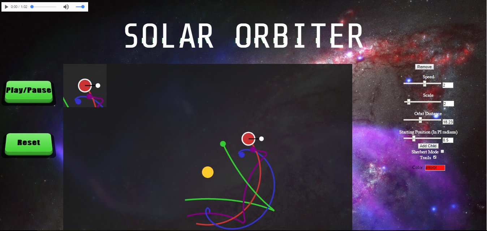
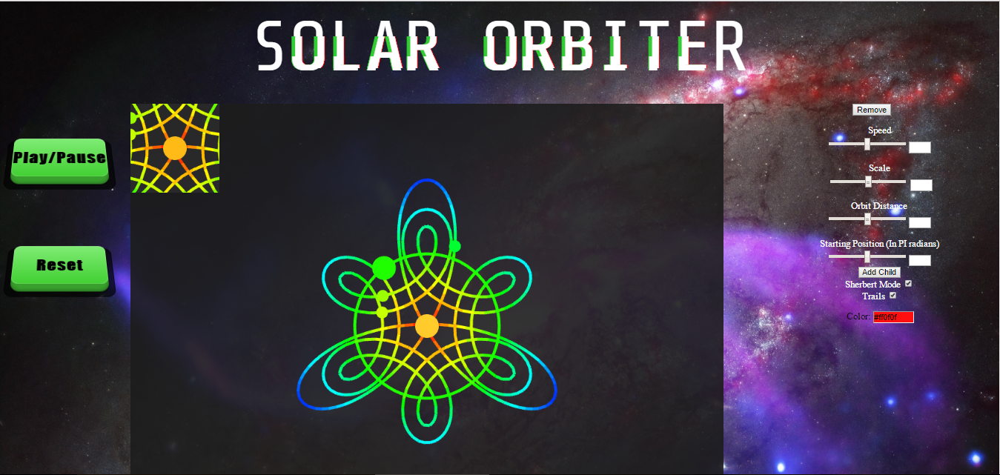

<table border="1" >
<tr>
<td align="center" style="text-align:left;">
  <br />
 
<b>Developers</b><br>
Micheal Ritchie<br />
Fuli Lan<br />
</td>
<td>
    <p><b><u>Solar Orbiter</u></b></p> 
   <p>
Solar orbiter allows the user to add and remove circle objects that automatically orbit their parent circle. The program always has one circle at the center, which is stationary. The user can change the speed, direction, size, starting position, and color of the circle objects. By exploring the relationships between speed and distances of the parent and child circles the user can create interesting patterns and cycles. The trail mode can also be used to create drawings based off the paths of the circles.
</p>
   <p>
   <a href="http://students.washington.edu/mgr44/">Click to play </a><br/>
   <a href="Proposal.ppt">Project proposal</a><br />

   
   
   
</td>
</tr>
</table>